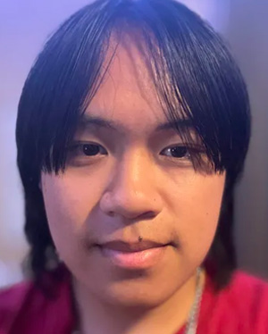
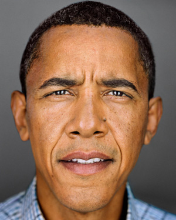
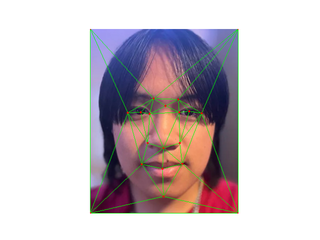
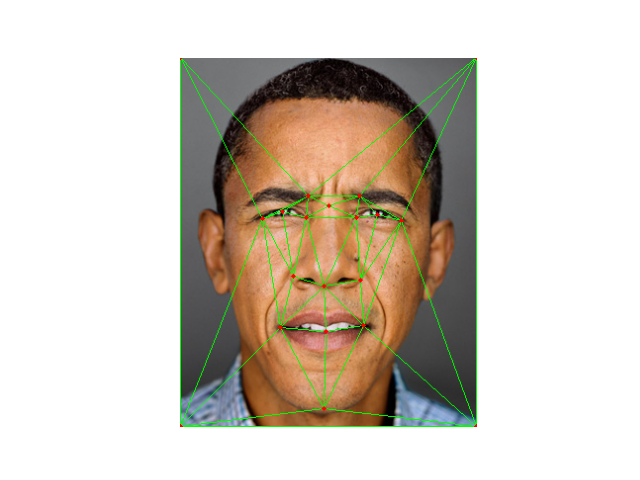
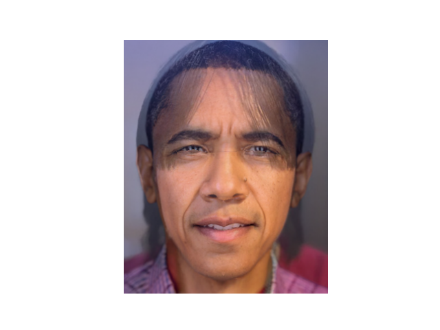
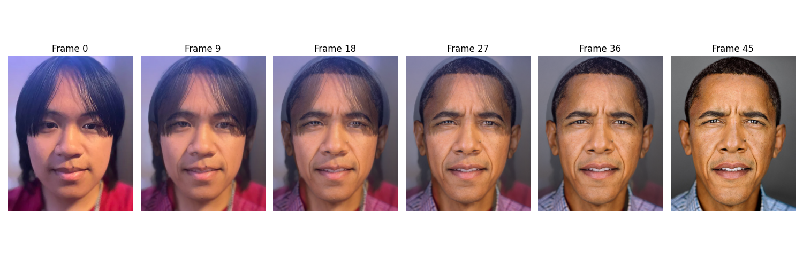
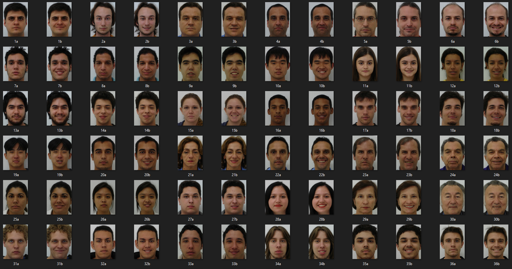
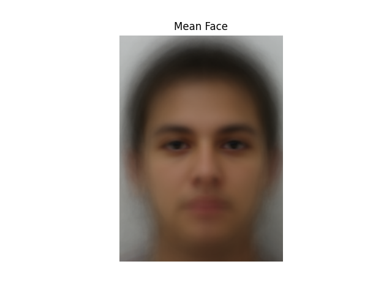
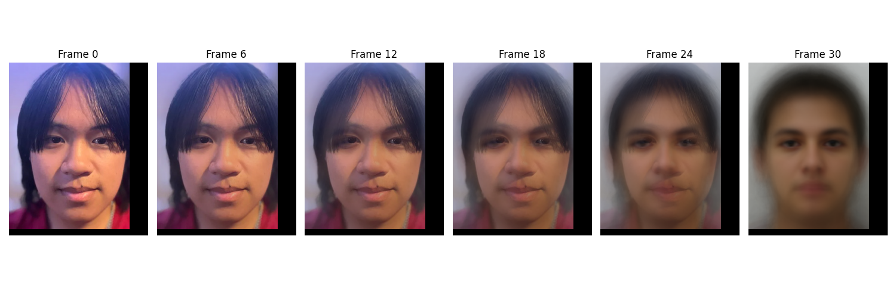
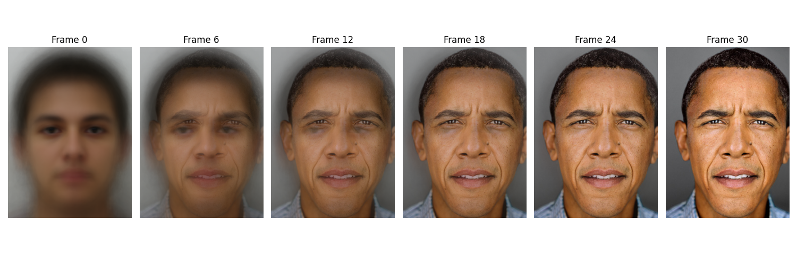

Introduction
This project focuses on implementing image morphing techniques. The objective is to create seamless transitions between images by establishing correspondence points, applying affine transformations, and generating intermediate frames to create a smooth morphing sequence. The project involves generating a mid-way face between two images, creating a morph sequence, and computing the mean face of a population.

Image A: Me.jpg

Image B: Obama.jpg
Correspondences
To establish correspondence points between the two images, I used the provided Correspondence tool to interactively select key facial features. I exported these points as a JSON file and loaded them into my code, ensuring precise and consistent mapping. These points focus on landmarks like the eyes, eyebrows, nose, mouth, chin, and face outline, including edges and corners to account for the background.
The selected points were then used to compute Delaunay triangulation on the average shape. This divides the image into triangles, facilitating smooth and realistic transformations by applying affine transformations to each corresponding triangle.

Correspondence Points on Image A

Correspondence Points on Image B
Midway Face
To create the midway face, I calculated the average shape by averaging the corresponding points from both images. Then, I warped both images into this average shape using affine transformations for each triangle defined by the Delaunay triangulation. Finally, I averaged the pixel intensities of the two warped images to produce the midway face.
The resulting image shows features from both original images, combined to form a composite that looks like a blend of Obama and my faces.

Midway Face between Image A and Image B

Midway Face between Image A and Image B with Triangulation
Morph Sequence
To create a smooth morphing sequence from Image A to Image B, I generated a series of intermediate frames by varying a warp fraction and a dissolve fraction from 0 to 1. The warp fraction controls the shape transformation, while the dissolve fraction controls the cross-dissolve of pixel intensities. For each frame, the correspondence points were interpolated based on the current warp fraction to compute the intermediate shape. Both images were then warped into this intermediate shape, and their pixel values were blended using the dissolve frac.
The sequence consists of 45 frames, which were compiled into a GIF to showcase the transition.

Me morphing into Obama.
"Mean Face" of a Population
To compute the mean face of a population, I collected a set of facial images from one of the provided sources in the spec and used a single set of correspondence points for all images. I manually selected correspondence points on the first image, focusing on key facial landmarks. These points were then used for all images in the dataset as the dataset had already aligned the images.
Each individual face was warped into the average shape computed from these points. After warping all faces to the average shape, I averaged the pixel intensities to obtain the mean face of the population. This mean face represents the average appearance and shape of all faces in the dataset.

Population Images

Mean Face of the Population
Additionally, I warped my own face into the average shape from this population and warped the mean face into my Obama's face.

My Face Warped to Mean Shape of the Population

Mean Face Warped to My Shape
Conclusion
This project successfully demonstrated image morphing techniques, including creating midway faces, morph sequences, and computing the mean face of a population. As someone who utilizes Photoshop in my freelance work, exploring these similar types of tools from a fundamental level was incredibly interesting and rewarding for me. Understanding how these image manipulation techniques work under the hood enhances my appreciation for the software I use daily and provides deeper insights into the processes behind image editing and transformation.